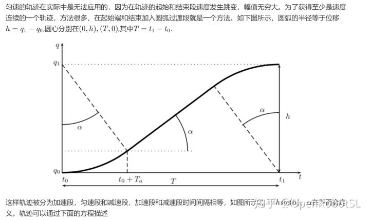
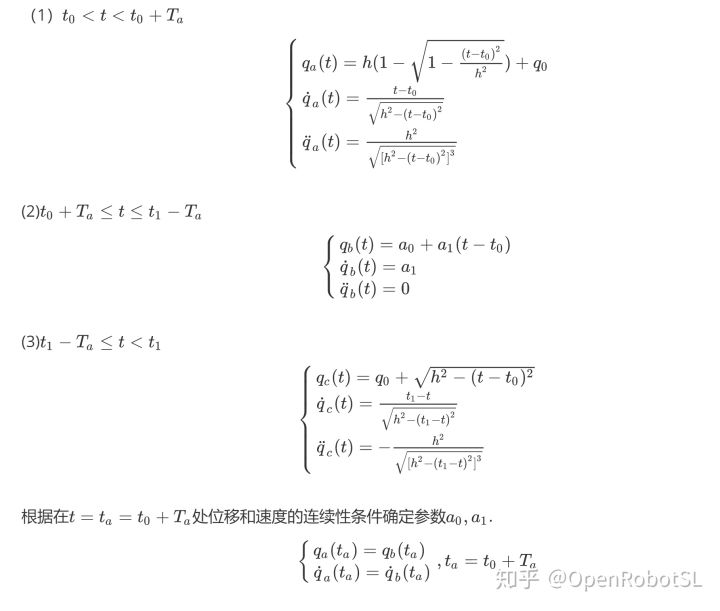
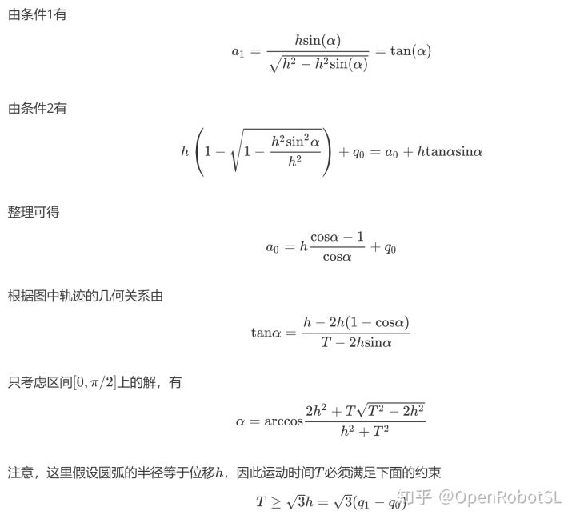
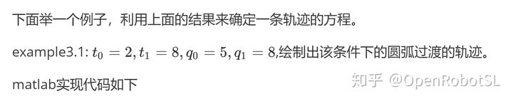
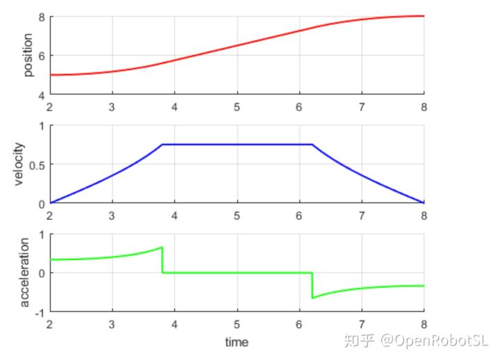

Home
基本轨迹合成--线性轨迹的圆弧过渡




%{
使用圆弧过渡线性轨迹,example3.1
LiBing
2018-12-21,
%}
close('all')
clc
clear
%%
%已知轨迹给定条件
t0=2;
t1=8;
q0=5;
q1=8;
%%
%根据公式计算轨迹方程的参数
T=t1-t0;
h=q1-q0;
Ts=0.001;
alpha=acos((2.0*h*h+T*sqrt(T*T-3.0*h*h))/(h*h+T*T));
a0=q0+h*(cos(alpha)-1)/cos(alpha);
a1=tan(alpha);
Ta=h*sin(alpha);
i=1;
for t=t0:Ts:t1
time(i)=t;
if(t>=t0 &&t<t0+Ta)
q(i)=h*(1.0-sqrt(1.0-(t-t0)^2/h^2))+q0;
dq(i)=(t-t0)/sqrt(h^2-(t-t0)^2);
ddq(i)=h^2/sqrt((h^2-(t-t0)^2)^3);
end
if(t>=t0+Ta && t<t1-Ta)
q(i)=a0+a1*(t-t0);
dq(i)=a1;
ddq(i)=0;
end
if(t>=t1-Ta&& t<=t1)
q(i)=q0+sqrt(h^2-(t1-t)^2);
dq(i)=(t1-t)/sqrt(h^2-(t1-t)^2);
ddq(i)=h^2/sqrt((h^2-(t1-t)^2)^3);
end
i=i+1;
end
%%
%设置绘图格局
figure
fig1=subplot(3,1,1);
ylabel('position');
grid on
hold on
fig2=subplot(3,1,2);
ylabel('velocity');
grid on
hold on
fig3=subplot(3,1,3);
ylabel('acceleration');
xlabel('time');
grid on
hold on
%绘图
c1=plot(fig1,time,q,'-r','LineWidth',1.5);
c2=plot(fig2,time,dq,'-b','LineWidth',1.5);
c3=plot(fig3,time,ddq,'-g','LineWidth',1.5);
%end
======================================================================
我的测试结果及程序
下面是我测试的代码：